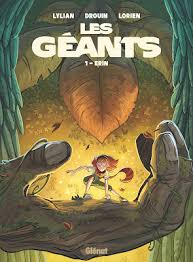

Truyện tranh hay mạn họa là một phương tiện được sử dụng để diễn đạt ý tưởng bằng hình ảnh, thường kết hợp với văn bản hoặc thông tin hình ảnh khác. Thông thường, nó có dạng một chuỗi các khung hình liên tiếp. Các yếu tố văn bản như ô bóng chữ, chú thích, và Từ tượng thanh có thể chỉ ra đối thoại, diễn đạt, hiệu ứng âm thanh hoặc thông tin khác. Không có sự đồng thuận trong số các nhà lý thuyết và nhà sử học về một định nghĩa của truyện tranh; một số nhấn mạnh sự kết hợp giữa hình ảnh và văn bản, một số nhấn mạnh sự tuần tự hoặc mối quan hệ hình ảnh khác, và một số nhấn mạnh các khía cạnh lịch sử như sao chép hàng loạt hoặc việc sử dụng nhân vật tái diễn. Việc vẽ tranh và các hình thức khác của hình ảnh là các phương tiện tạo hình phổ biến nhất trong truyện tranh; fumetti là một hình thức sử dụng hình ảnh nhiếp ảnh. Các dạng phổ biến bao gồm comic strip, truyện tranh chính trị và truyện tranh nghịch ngợm, và sách truyện tranh. Kể từ cuối thế kỷ 20, các tập sách bìa cứng như tiểu thuyết đồ họa, album truyện tranh và tankōbon ngày càng phổ biến, trong khi truyện tranh trực tuyến đã tăng trưởng mạnh trong thế kỷ 21
Lịch sử truyện tranh đã đi theo những con đường khác nhau trong các nền văn hóa khác nhau. Học giả đã đặt ra một tiền sử từ xa trở lại như tranh tường Lascaux. Vào giữa thế kỷ 20, truyện tranh phát triển mạnh mẽ, đặc biệt là ở Hoa Kỳ, Tây Âu (đặc biệt là Pháp và Bỉ) và Nhật Bản. Lịch sử Truyện tranh Châu Âu thường được truy vết từ những dải tranh của Rodolphe Töpffer vào những năm 1830, và trở nên phổ biến sau thành công vào những năm 1930 của những dải tranh và sách như The Adventures of Tintin. Truyện tranh Hoa Kỳ trỗi dậy như một phương tiện truyền thông đại chúng vào đầu thế kỷ 20 với sự xuất hiện của dải tranh trên báo; sách truyện tranh comic books theo kiểu tạp chí xuất hiện vào những năm 1930, trong đó thể loại siêu anh hùng trở nên nổi bật sau khi Superman xuất hiện vào năm 1938. Lịch sử truyện tranh và hoạt hình Nhật Bản (manga) đề xuất nguồn gốc từ thế kỷ 12. Các dải tranh hiện đại xuất hiện ở Nhật Bản vào đầu thế kỷ 20, và sản lượng của các tạp chí và sách truyện tranh mở rộng nhanh chóng trong thời kỳ sau Chiến tranh thế giới II (1945-) với sự phổ biến của các họa sĩ truyện tranh như Osamu Tezuka. Truyện tranh đã có một sự danh tiếng thấp trong phần lớn lịch sử của họ, nhưng vào cuối thế kỷ 20, nó bắt đầu được chấp nhận nhiều hơn với công chúng và các nhà học giả
Thuật ngữ "truyện tranh" được áp dụng cho phương tiện truyện tranh khi được sử dụng như một danh từ không đếm được, do đó nó được dùng số ít: "truyện tranh là một phương tiện" thay vì "truyện tranh là một phương tiện". Khi từ "truyện tranh" xuất hiện dưới dạng danh từ đếm được, nó chỉ đến các trường hợp của phương tiện truyện tranh, chẳng hạn như các dải truyện tranh riêng lẻ hoặc sách truyện tranh: "Những truyện tranh của Tom nằm trong tầng hầm." Các bức tranh là những hình ảnh riêng lẻ chứa một phân đoạn hành động, thường được bao quanh bởi một viền. Các khoảnh khắc quan trọng trong một câu chuyện được chia thành các bức tranh thông qua quá trình đóng gói. Người đọc ghép các mảnh vụn lại thông qua quá trình đóng lại bằng cách sử dụng kiến thức cơ bản và hiểu biết về mối quan hệ giữa các bức tranh để tưởng tượng sự kiện diễn ra. Kích thước, hình dạng và bố trí của các bức tranh ảnh hưởng đến thời gian và nhịp độ của câu chuyện. Nội dung của một bức tranh có thể không đồng bộ, trong đó các sự kiện được miêu tả trong cùng một hình ảnh không nhất thiết xảy ra cùng một thời điểm.
Trong thế kỷ 19, các tờ tạp chí minh họa hài hước được ưa chuộng ở Anh, trong đó tờ The Glasgow Looking Glass vào năm 1825 là một trong những tờ tồn tại ngắn nhất. Tạp chí phổ biến nhất là Punch, đã phổ biến thuật ngữ hoạt họa cho những hình caricature hài hước. Thỉnh thoảng, những hình hoạ trong các tạp chí này xuất hiện theo chuỗi; nhân vật Ally Sloper xuất hiện trong dãy truyện tranh liên tiếp sớm nhất khi nhân vật bắt đầu xuất hiện trên tạp chí hàng tuần riêng của mình vào năm 1884.
Truyện tranh Mỹ phát triển từ các tạp chí như Puck, Judge và Life. Sự thành công của các phần bổ sung hài hước minh họa trong New York World và sau đó là New York American, đặc biệt là truyện tranh The Yellow Kid của Outcault, đã dẫn đến sự phát triển của truyện tranh báo. Các dải truyện tranh ngày Chủ nhật ban đầu có trang đầy đủ[44] và thường được in màu. Từ năm 1896 đến 1901, các họa sĩ truyện tranh đã thử nghiệm với sự liên tục, chuyển động và bong bóng lời nói.[45] Một ví dụ là Gustave Verbeek, người đã viết chuỗi truyện tranh "The Upside Downs of Old Man Muffaroo and Little Lady Lovekins" từ năm 1903 đến 1905. Những truyện tranh này được tạo ra sao cho người đọc có thể đọc 6 tấm truyện tranh, lật sách và tiếp tục đọc. Ông đã làm tổng cộng 64 truyện tranh như vậy. Năm 2012, Marcus Ivarsson đã làm lại một số truyện tranh trong cuốn sách 'In Uppåner med Lilla Lisen & Gamle Muppen'.
Những dải truyện tranh hàng ngày ngắn gọn, đen trắng bắt đầu xuất hiện sớm trong thế kỷ 20 và đã được thiết lập trên các tờ báo sau sự thành công của Mutt and Jeff của Bud Fisher vào năm 1907. Ở Anh, Amalgamated Press đã thiết lập một phong cách phổ biến với chuỗi hình ảnh và văn bản bên dưới, bao gồm Illustrated Chips và Comic Cuts. Ban đầu, dải truyện tranh hài hước chiếm ưu thế, và trong những năm 1920 và 1930, các dải truyện tranh có câu chuyện liên tục thuộc các thể loại như phiêu lưu và kịch cũng trở nên phổ biến.
Những cuốn tạp chí mỏng gọi là comic books xuất hiện vào những năm 1930, ban đầu là tái bản truyện tranh báo; vào cuối thập kỷ, nội dung gốc bắt đầu chiếm ưu thế. Sự thành công của Action Comics và siêu anh hùng Superman vào năm 1938 đánh dấu sự khởi đầu của Thời kỳ vàng của truyện tranh, trong đó thể loại siêu anh hùng trở nên nổi bật. Ở Vương quốc Anh và Cộng đồng quốc gia, Dandy (1937) và Beano (1938) do DC Thomson sáng tạo đã trở thành các tiêu đề hài hước thành công, với tổng phân phối lên đến hơn 2 triệu bản vào những năm 1950. Nhân vật của họ, bao gồm "Dennis the Menace", "Desperate Dan" và "The Bash Street Kids", đã được đọc bởi nhiều thế hệ trẻ em Anh. Truyện tranh ban đầu đã thử nghiệm với siêu anh hùng và câu chuyện hành động trước khi chuyển sang dải truyện tranh hài hước kết hợp giữa phong cách của Amalgamated Press và truyện tranh Mỹ.
Sự phổ biến của truyện tranh siêu anh hùng giảm sau Chiến tranh thế giới II, trong khi doanh số truyện tranh tiếp tục tăng lên khi các thể loại khác như tình yêu, phương Tây, tội phạm, kinh dị và hài hước lan rộng. Sau đỉnh cao doanh số vào đầu những năm 1950, nội dung của truyện tranh (đặc biệt là truyện tội ác và kinh dị) đã bị kiểm duyệt kỹ càng bởi các nhóm phụ huynh và cơ quan chính phủ, dẫn đến các cuộc điều trần ở Hạ viện Hoa Kỳ và thành lập cơ quan tự kiểm duyệt Comics Code Authority. Cơ quan này đã bị chỉ trích vì làm trì hoãn sự phát triển của truyện tranh Mỹ và duy trì địa vị thấp trong xã hội Mỹ trong phần lớn thế kỷ còn lại. Siêu anh hùng đã tái thiết lập mình là thể loại truyện tranh nổi bật nhất vào đầu những năm 1960. Comix ngầm đã thách thức Cơ quan kiểm duyệt và người đọc với nội dung người lớn, phản văn hoá vào cuối những năm 1960 và đầu những năm 1970. Cuộc phát triển truyện tranh ngầm đã sinh ra phong trào truyện tranh thay thế vào những năm 1980 với nội dung chín chắn, thường là thử nghiệm trong các thể loại không phải siêu anh hùng.
Truyện tranh ở Mỹ đã có một danh tiếng thấp hạng bắt nguồn từ nguồn gốc của nó trong văn hóa đại chúng; tầng lớp văn hóa thường nhìn thấy văn hóa phổ biến là đe dọa văn hóa và xã hội. Trong nửa sau của thế kỷ 20, văn hóa phổ biến đã được chấp nhận nhiều hơn, và ranh giới giữa văn hóa cao và văn hóa thấp bắt đầu mờ đi. Tuy nhiên, truyện tranh vẫn tiếp tục bị kỳ thị, vì được xem là giải trí cho trẻ em và người không biết đọc
Truyện tranh đồ họa - truyện tranh dài - bắt đầu thu hút sự chú ý sau khi Will Eisner phổ biến thuật ngữ này với cuốn sách A Contract with God (1978). Thuật ngữ này trở nên rộng rãi biết đến với công chúng sau sự thành công thương mại của Maus, Watchmen và The Dark Knight Returns vào giữa những năm 1980. Vào thế kỷ 21, truyện tranh đồ họa đã được thiết lập trong các cửa hàng sách chínhstream và thư viện và truyện tranh web trở nên phổ biến.
Nhà vẽ truyện tranh người Thụy Sĩ nói tiếng Pháp Rodolphe Töpffer đã tạo ra các đoạn truyện tranh từ năm 1827, và công bố các lý thuyết về hình thức này. Truyện tranh đã xuất hiện rộng rãi trên các báo và tạp chí từ thế kỷ 19. Sự thành công của tác phẩm Zig et Puce năm 1925 đã phổ biến việc sử dụng bong bóng thoại trong truyện tranh châu Âu, sau đó truyện tranh Bỉ-Pháp đã trở nên ưu ái. The Adventures of Tintin, với phong cách nét vẽ rõ ràng đặc trưng, lần đầu tiên được đăng tải trên phần bổ sung truyện tranh của các tờ báo từ năm 1929, và trở thành biểu tượng của truyện tranh Bỉ-Pháp
Sau thành công của tạp chí Le Journal de Mickey (thành lập năm 1934), các tạp chí truyện tranh riêng biệt như Spirou (thành lập năm 1938) và Tintin (1946-1993), và các tập truyện tranh đầy màu sắc đã trở thành phương tiện chính cho truyện tranh trong giai đoạn giữa thế kỷ 20. Giống như ở Hoa Kỳ, vào thời điểm đó truyện tranh được coi là thiếu nhi và đe dọa văn hóa và học vấn; các nhà bình luận cho rằng "không một tác phẩm nào chịu được phân tích nghiêm túc nhất" và rằng truyện tranh "phá hoại mọi nghệ thuật và văn học"
Vào những năm 1960, thuật ngữ bandes dessinées ("đoạn truyện tranh") trở nên phổ biến ở Pháp để chỉ loại hình này. Những nhà vẽ truyện tranh bắt đầu tạo ra các tác phẩm dành cho công chúng trưởng thành, và thuật ngữ "Nghệ thuật thứ chín"[e] được đặt ra, khi truyện tranh bắt đầu thu hút sự chú ý của công chúng và học thuật như một hình thức nghệ thuật. Một nhóm gồm René Goscinny và Albert Uderzo thành lập tạp chí Pilote vào năm 1959 để đưa cho các nghệ sĩ tự do hơn trong công việc của mình. Cuộc phiêu lưu của Asterix của Goscinny và Uderzo xuất hiện trên tạp chí này và trở thành bộ truyện tranh tiếng Pháp bán chạy nhất. Từ năm 1960, tạp chí châm biếm và phá vỡ các luật lệ kiểm duyệt Hara-Kiri thách thức các luật pháp kiểm duyệt theo tinh thần đối kháng dẫn đến sự kiện Tháng Năm 1968
Sự chán nản với kiểm duyệt và sự can thiệp biên tập đã dẫn đến việc một nhóm nhà vẽ truyện tranh của Pilote thành lập tạp chí dành cho người trưởng thành L'Écho des savanes vào năm 1972. Truyện tranh dành cho người lớn và thử nghiệm phát triển mạnh vào những năm 1970, ví dụ như trong thể loại khoa học viễn tưởng thử nghiệm của Mœbius và các tác giả khác trong Métal hurlant, ngay cả các nhà xuất bản chủ yếu cũng bắt đầu xuất bản truyện tranh dành cho người lớn định dạng danh giá.
Từ những năm 1980, nhận thức chung trở lại và việc phân tập truyện trở nên ít phổ biến hơn khi số lượng tạp chí truyện tranh giảm đi và nhiều tác phẩm truyện tranh bắt đầu được xuất bản trực tiếp dưới dạng tập truyện. Các nhà xuất bản nhỏ như L'Association xuất bản các tác phẩm dài hơn trong định dạng phi truyền thống của các tác giả theo trường phái auteur cũng trở nên phổ biến. Kể từ những năm 1990, việc sáp nhập đã dẫn đến ít nhà xuất bản lớn hơn, trong khi những nhà xuất bản nhỏ như nấm mọc nhiều lên. Doanh số bán hàng tổng thể tiếp tục tăng trưởng mặc dù xu hướng thu nhỏ thị trường in ấn.
Truyện tranh và hoạt hình Nhật Bản (manga) có một lịch sử được xem là đã tồn tại từ thời kỳ nhân vật hóa trong Chōjū-jinbutsu-giga (thế kỷ 12-13), các cuốn sách tranh toba-e và kibyōshi thế kỷ 17, và các tranh khắc gỗ như ukiyo-e rất phổ biến từ thế kỷ 17 đến 20. kibyōshi chứa các ví dụ về hình ảnh tuần tự, đường chuyển động và hiệu ứng âm thanh
Các tạp chí minh họa cho người nước ngoài ở Nhật đã giới thiệu các hình vẽ châm biếm theo phong cách phương Tây vào cuối thế kỷ 19. Các ấn phẩm mới cả theo phong cách phương Tây và Nhật Bản trở nên phổ biến, và vào cuối thập kỷ 1890, các bản phụ trang truyện tranh theo phong cách báo chí Mỹ bắt đầu xuất hiện ở Nhật, cũng như một số dải truyện tranh Mỹ. Năm 1900, Jiji Manga được xuất hiện trên báo Jiji Shinpō - sự xuất hiện đầu tiên của từ "manga" với ý nghĩa hiện đại của nó, và nơi mà vào năm 1902, Rakuten Kitazawa đã tạo ra dòng truyện tranh Nhật Bản hiện đại đầu tiên. Đến những năm 1930, các dải truyện tranh được đăng ký trong các tạp chí hàng tháng dành cho các bé trai và bé gái và được tập hợp thành những tập sách cứng.
Thời đại hiện đại của truyện tranh Nhật Bản bắt đầu sau Chiến tranh thế giới thứ hai, được thúc đẩy bởi sự thành công của các truyện tranh liên tiếp của nhà vẽ nổi tiếng Osamu Tezuka và dải truyện Sazae-san. Thể loại và khán giả đa dạng hóa trong những thập kỷ tiếp theo. Câu chuyện thường được đăng ký trước trên các tạp chí có độ dày hàng trăm trang và có thể chứa hơn mười câu chuyện; sau đó chúng được biên soạn thành sách định dạng tankōbon. Vào cuối thế kỷ 20 và đầu thế kỷ 21, gần một phần tư tất cả tài liệu in ấn ở Nhật Bản là truyện tranh. Sách truyện được dịch nổi tiếng ở các thị trường nước ngoài - trong một số trường hợp ngang hoặc vượt qua doanh số bán hàng của truyện tranh nội địa
Truyện tranh có ảnh hưởng lớn tới thế giới hiện nay. Chỉ tính riêng doanh thu của truyện tranh Nhật Bản những năm 1990 đã đạt khoảng 6000 tỉ yên(khoảng 1200000 tỉ VND) chưa kể doanh thu của truyện được đăng trên báo. Trên thế giới, bạn có thể thấy hàng nghìn người ăn, ngủ và sống với truyện tranh. Ở châu Á, hàng nghìn người luôn ăn và ngủ cùng manga.
Có thể tìm ra chúng tại các trung tâm thương mại trong thành phố lớn. Những người hâm mộ truyện tranh sẵn sàng "mất ngủ" để chờ phần mới của bộ truyện tranh mà họ yêu thích. Truyện tranh có những tác động tiêu cực lẫn tích cực tới con người nhưng chúng ta không thể phủ nhận rằng truyện tranh đã len lỏi vào mọi nơi mọi chỗ
Tại một số lễ hội truyện tranh lượng người tham gia mua truyện có thể lên tới hơn nửa triệu người
Truyện tranh không chỉ là thứ để giải trí, chúng còn có thể được dùng cho mục đích giáo dục, cũng như là món ăn và là người bạn tinh thần không thể thiếu đối với nhiều người khi còn ở lứa tuổi trẻ thơ
Chúng cũng được đánh giá là có tác động tốt với tinh thần, tâm hồn và hành vi của trẻ em khi mà các nhân vật luôn cho trẻ em thấy những mặt tốt và ấn tượng, chúng sẽ bắt chước theo như thế với tính học hỏi và bắt chước vốn có của mình. Như các nhân vật siêu anh hùng được phương Tây dùng để giáo dục tiềm năng đạo đức của trẻ em
Nó cũng là một cách để trẻ em rèn thói quen đọc sách. Đây cũng là sở thích của các em, cũng là thú vui thư giãn, giải trí sau những giờ phút học tập căng thẳng. Với những cuốn truyện tranh bổ ích và lý thú có thể giúp giáo dục và giáo dưỡng trẻ, giúp trẻ phát huy khả năng sáng tạo phong phú, phát triển năng khiếu... Nó cũng là cách tốt để truyền tải các kiến thức khô khan như lịch sử[cần dẫn nguồn] Tại khoa HIV của Bệnh viện Nhi đồng Tygerberg của Nam Phi, một bộ truyện tranh có nội dung giới thiệu các kiến thức về HIV/AIDS đã được phân phát cho các bệnh nhi nhiễm HIV để giúp chúng có thể đối phó với căn bệnh thế kỷ này.
Với sự phát triển trí tuệ thì truyện tranh được đánh giá là: mặc dù chưa hiểu được về nội dung của truyện, nhưng với những cuốn truyện tranh về con vật, nhiều màu sắc hấp dẫn, truyện có nhiều tranh ảnh phong phú...cũng giúp trẻ phát triển khả năng nhận thức được màu sắc, thiên nhiên... kích thích trẻ nhận biết và quan sát đồ vật, tạo đà cho trẻ khám phá thế giới xung quanh. Khi bé lớn hơn, với hình thức vừa đọc truyện cho bé vừa đặt câu hỏi diễn biến tiếp theo của truyện giúp trẻ phát triển tư duy phán đoán và trí tưởng tượng phong phú. Việc khuyến khích trẻ kể lại truyện đã được nghe cũng giúp cho trẻ phát triển được trí nhớ tốt, những lời khen ngợi khi bé trả lời những câu hỏi đúng khi phán đoán đồ vật, nhận vật, kết quả... trong truyện sẽ động viên và khuyến khích được trẻ yêu thích được nghe và đọc sách sau này. Truyện tranh cũng giúp trẻ em tập đọc và có vốn từ phong phú hơn khi đọc
Về tác hại, dưới góc nhìn của các giáo sư đầu ngành ngôn ngữ học, các nhà báo, nhà văn, ngôn ngữ của trẻ ngay từ đầu đời đã bị ảnh hưởng xấu sẽ dẫn tới những hậu quả lâu dài. Đặc biệt, ngôn ngữ của nhiều truyện mang tính "chợ búa" không chỉ tác động đến việc hành văn mà còn ảnh hưởng xấu đến tâm hồn và nhân cách của người đọc trẻ tuổi (đặc biệt trẻ con)
Ngay tại Nhật Bản, xứ sở của truyện tranh, những mặt trái do tác hại của truyện tranh gây ra cho giới trẻ Nhật Bản cũng không hề nhỏ. Nhiều phương tiện thông tin đại chúng của Nhật Bản đã lo ngại khi lên tiếng cảnh báo về những truyện tranh có nội dung không lành mạnh đang ngấm ngầm đục khoét tâm hồn giới trẻ nước này.
Đã có những tranh cãi quyết liệt về giới hạn nào của mức độ bạo lực nên xuất hiện trong các tác phẩm truyện tranh. Và thực tế về sự nổi tiếng của một số bộ truyện tranh có nội dung bạo lực cao độ cho thấy tính lưỡng chuẩn của độc giả khi đánh giá vấn đề này. Ron Goulart chỉ ra rằng những yếu tố bạo lực và phản giáo dục, mà mọi người phàn nàn ở các bộ truyện tranh quá đà, có thể được tìm thấy trong các chương trình truyền hình và truyền thông khác mà mọi người có thể thấy hàng ngày. Nội dung của những chương trình truyền thông các loại thực sự đã đẩy con người đi tới gần đến mức giới hạn và điều này đã châm ngòi cho các cuộc tranh luận về mối tương quan giữa tự do ngôn luận và trách nhiệm của mỗi người. Một ý kiến khác cho rằng hiện tượng này cho thấy độc giả đã "mất cảm giác" trước nạn bạo lực trong truyện tranh. Còn họa sĩ Rick Veitch thì nhận định: một trong những đặc tính của truyện tranh là xuyên phá vào trong bản ngã của mỗi người, nơi tất cả những thứ bị đè nén đều tích chứa trong đó